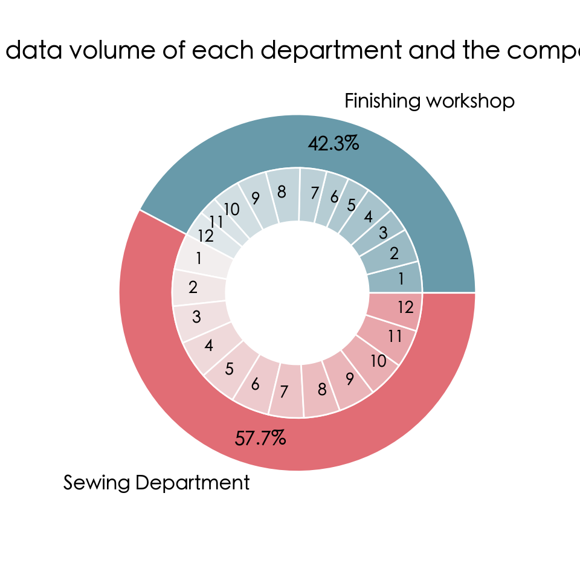
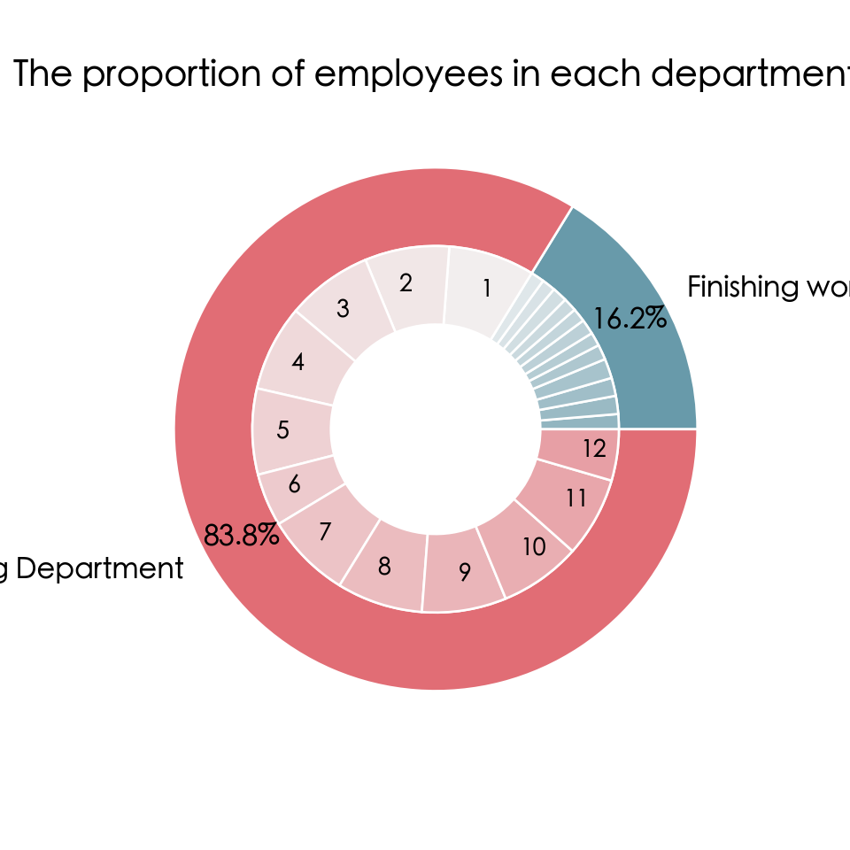
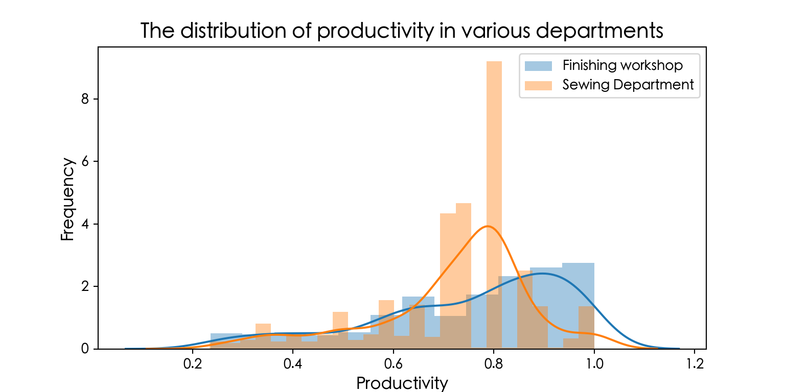
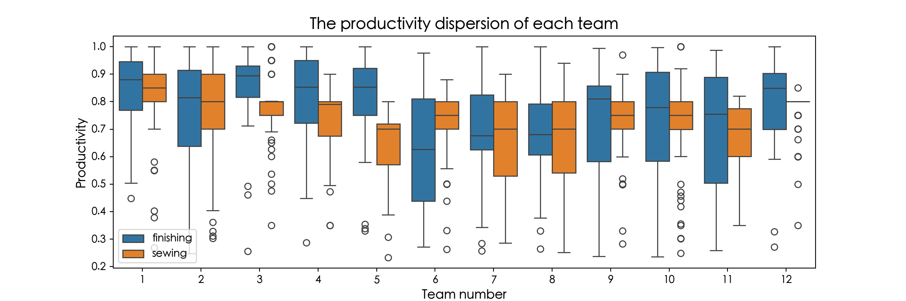
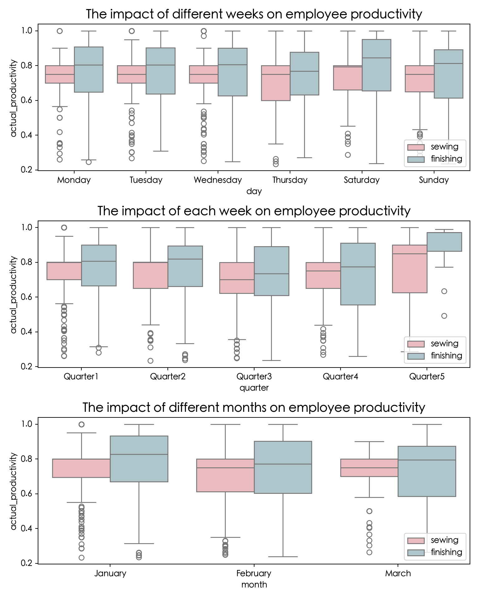
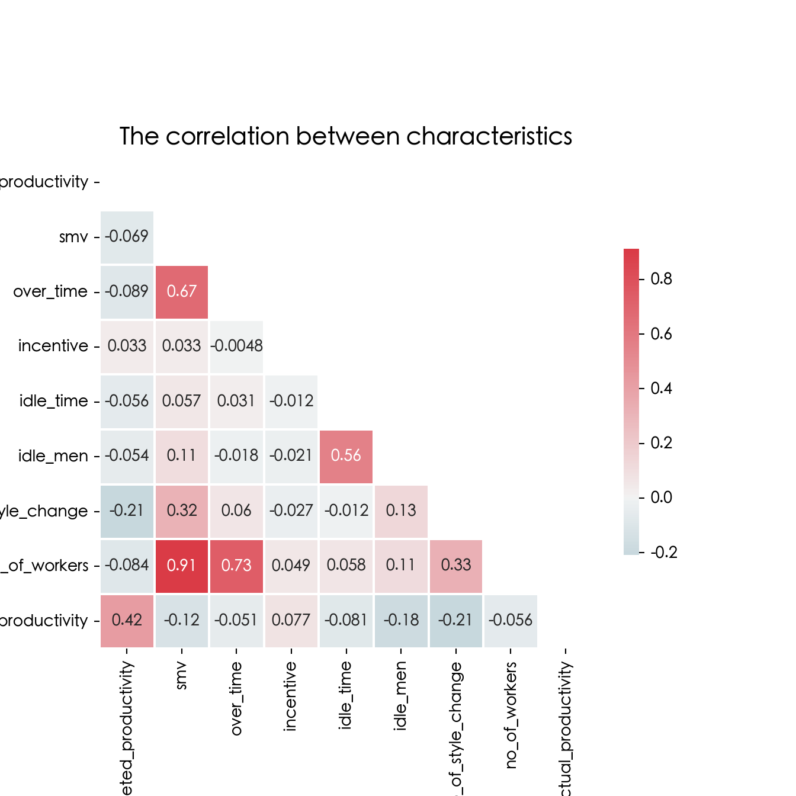
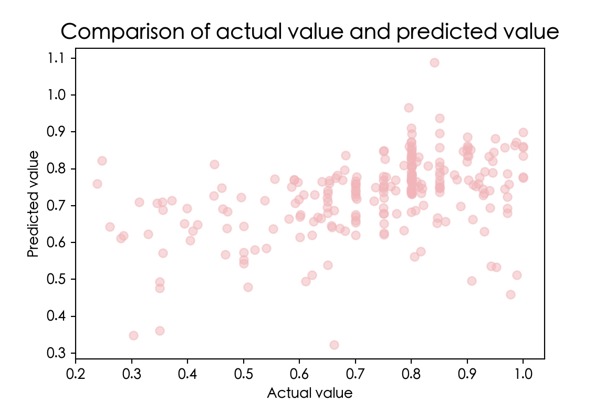
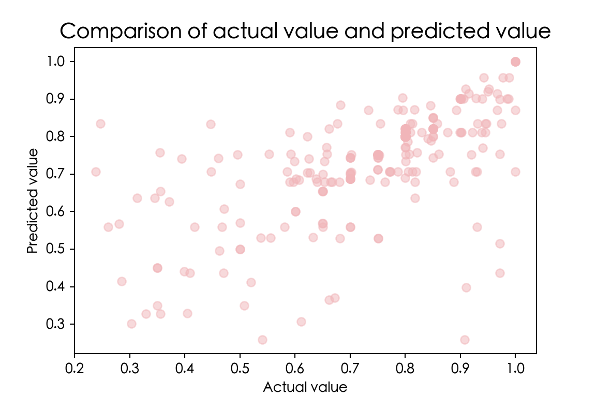
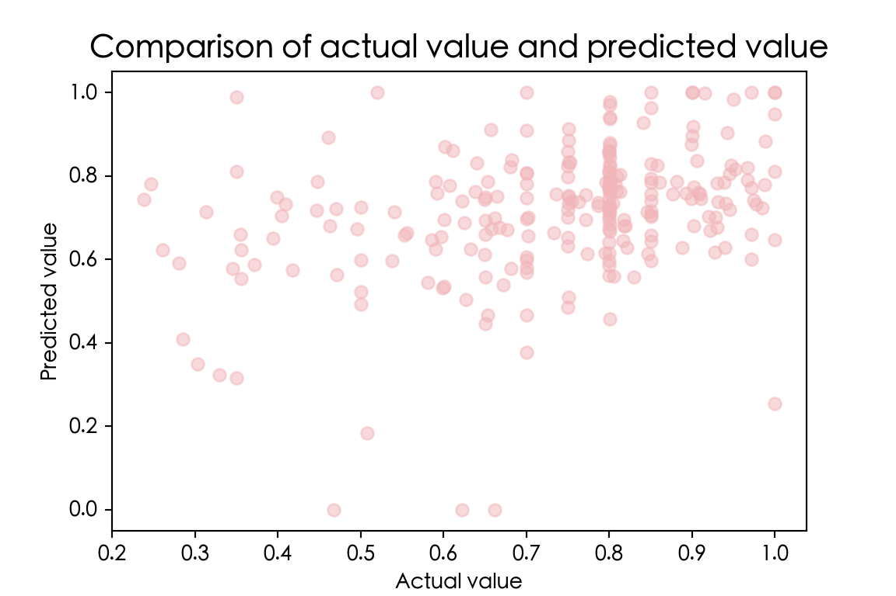

A predictive modelling project
1 Data introduction and data reading
2 Data Cleaning
3 Exploratory Data Analysis
3.1 Composition of each department team
3.2 Employee Productivity Distribution
3.3. Data correlation analysis
4 Predict employee productivity
4.1 Training Set Test Set Division
4.2 Linear Regression
4.3 Regression Decision Tree
4.4 Neural Network
5 Summary
The employee productivity data set of the garment factory contains a total of 1197 rows and 15 columns, of which the actual_productivity column is the actual productivity of the employees we ultimately need to predict. The types and meanings of each field are shown in the following table:
| Column Name | Type | Meaning Description |
|---|---|---|
| date | Character type | Date MM-DD-YYYY |
| quarter | Character type | A few weeks of each month |
| department | Character type | Department |
| day | Character type | Week |
| team | Integration | Team number |
| targeted_productivity | floating point type | target productivity |
| smv | Floating point type | Standard minute value, task allocation time |
| wip | Floating point type | In-process, including the number of unfinished items in the product |
| over_time | Integrative | Represents the timeout time of each team, in minutes |
| incentive | Integration | Bonus to motivate specific actions |
| idle_time | Floating point type | Time when production is interrupted due to various reasons |
| idle_men | Integration | The number of idle workers due to production interruption |
| no_of_style_change | Integration | The number of changes in specific product style |
| no_of_workers | Floating point type | Number of workers in each team |
| actual_productivity | Floating point type | The percentage of actual productivity delivered by workers, the value range is 0-1 |
First of all, we use the Pandas library to read data and view the basic information of the data.
import pandas as pd
import numpy as np
import seaborn as sns
import matplotlib.pyplot as plt
import matplotlib
plt.rcParams['font.sans-serif']=['SimHei'] # It is used to display Chinese labels normally.
plt.rcParams['axes.unicode_minus']=False # It is used to display negative signs normally.
matplotlib.rc("font",family='Heiti TC')
# %matplotlib inline
import warnings
# Warning is not displayed
warnings.filterwarnings('ignore')
# Read the data and view the first five lines of the data
garments = pd.read_csv('./input/garments_worker_productivity.csv')
garments.head() date quarter ... no_of_workers actual_productivity
0 1/1/2015 Quarter1 ... 59.0 0.940725
1 1/1/2015 Quarter1 ... 8.0 0.886500
2 1/1/2015 Quarter1 ... 30.5 0.800570
3 1/1/2015 Quarter1 ... 30.5 0.800570
4 1/1/2015 Quarter1 ... 56.0 0.800382
[5 rows x 15 columns]garments.info()<class 'pandas.DataFrame'>
RangeIndex: 1197 entries, 0 to 1196
Data columns (total 15 columns):
# Column Non-Null Count Dtype
--- ------ -------------- -----
0 date 1197 non-null str
1 quarter 1197 non-null str
2 department 1197 non-null str
3 day 1197 non-null str
4 team 1197 non-null int64
5 targeted_productivity 1197 non-null float64
6 smv 1197 non-null float64
7 wip 691 non-null float64
8 over_time 1197 non-null int64
9 incentive 1197 non-null int64
10 idle_time 1197 non-null float64
11 idle_men 1197 non-null int64
12 no_of_style_change 1197 non-null int64
13 no_of_workers 1197 non-null float64
14 actual_productivity 1197 non-null float64
dtypes: float64(6), int64(5), str(4)
memory usage: 140.4 KBThe data set contains a total of 1197 rows and 15 columns, of which date, quarter, department and day field data types are object, and the rest are numeric types. At the same time, it can be found that there is a missing value in the wip column. Next, let’s check the basic statistics of the data:
garments['quarter'].value_counts()quarter
Quarter1 360
Quarter2 335
Quarter4 248
Quarter3 210
Quarter5 44
Name: count, dtype: int64garments.describe(include='all') date quarter ... no_of_workers actual_productivity
count 1197 1197 ... 1197.000000 1197.000000
unique 59 5 ... NaN NaN
top 1/31/2015 Quarter1 ... NaN NaN
freq 24 360 ... NaN NaN
mean NaN NaN ... 34.609858 0.735091
std NaN NaN ... 22.197687 0.174488
min NaN NaN ... 2.000000 0.233705
25% NaN NaN ... 9.000000 0.650307
50% NaN NaN ... 34.000000 0.773333
75% NaN NaN ... 57.000000 0.850253
max NaN NaN ... 89.000000 1.120437
[11 rows x 15 columns]It can be seen from the results that the maximum value of the actual productivity of actual_productivity is 1.120437, and the actual value range of this field is 0-1, and we will deal with it in the future.
In the previous part, we found that there was a missing value in the wip column. Before processing, let’s calculate the proportion of the missing value:
# Check the ratio of wip missing values
round(garments.wip.isnull().sum()/len(garments.wip),2)np.float64(0.42)There are 42% of missing values in wip. Since it accounts for a relatively large proportion, we directly delete the field here.
# Delete the wip column
garments.drop(columns=['wip'], inplace=True)Next, use the pd.to_datetime() function to change the date column data type to the date type and set it as an index:
# Convert the date to the time type and set it as an index
garments.date = pd.to_datetime(garments.date)
garments.set_index(['date'],inplace=True)
# Check the date range
garments.indexDatetimeIndex(['2015-01-01', '2015-01-01', '2015-01-01', '2015-01-01',
'2015-01-01', '2015-01-01', '2015-01-01', '2015-01-01',
'2015-01-01', '2015-01-01',
...
'2015-03-11', '2015-03-11', '2015-03-11', '2015-03-11',
'2015-03-11', '2015-03-11', '2015-03-11', '2015-03-11',
'2015-03-11', '2015-03-11'],
dtype='datetime64[us]', name='date', length=1197, freq=None)It can be seen that the data was collected from January 1, 2015 to March 11, 2015. We add the month month column in the data set according to the date:
# Add the month
garments['month'] = garments.index.month_name().values
garments.head() quarter department ... actual_productivity month
date ...
2015-01-01 Quarter1 sweing ... 0.940725 January
2015-01-01 Quarter1 finishing ... 0.886500 January
2015-01-01 Quarter1 sweing ... 0.800570 January
2015-01-01 Quarter1 sweing ... 0.800570 January
2015-01-01 Quarter1 sweing ... 0.800382 January
[5 rows x 14 columns]From the data, it is found that the value of the timeout time field of each team of over_time is large, because the field is in minutes. In order to facilitate observation, we convert the unit into hours.
# Change the timeout time over_time to hours
garments['over_time'] = garments['over_time'] / 60
garments.head() quarter department ... actual_productivity month
date ...
2015-01-01 Quarter1 sweing ... 0.940725 January
2015-01-01 Quarter1 finishing ... 0.886500 January
2015-01-01 Quarter1 sweing ... 0.800570 January
2015-01-01 Quarter1 sweing ... 0.800570 January
2015-01-01 Quarter1 sweing ... 0.800382 January
[5 rows x 14 columns]The team team number column in the data is numerical, and it should be regarded as a discrete variable in the actual analysis. Here, the astype method is used to convert it into object.
# Change the team number and team type to object
garments['team'] = garments['team'].astype('object')Now, we begin to analyse whether there is an abnormal value in the data. Through observation, it is found that the unique value in the department department field is abnormal:
# Check the unique value of the department field
garments['department'].value_counts()department
sweing 691
finishing 257
finishing 249
Name: count, dtype: int64garments['department'].unique()<StringArray>
['sweing', 'finishing ', 'finishing']
Length: 3, dtype: strThere are spelling errors and space problems in the value of this field. We have unified the value of this column: sewing is the sewing department, and finishing is the finishing workshop.
# Modified to finishing and sewing
garments['department'] = garments.department.apply(lambda x: 'finishing' if 'finishing' in x else 'sewing')
garments['department'].value_counts()department
sewing 691
finishing 506
Name: count, dtype: int64In the data, there are 691 records in the sewing department and 506 records in the finishing workshop.
Finally, we unify the value of actual_productivity greater than 1 to 1.
# Set the productivity greater than 1 to 1
garments.actual_productivity = garments.actual_productivity.apply(lambda x: 1 if x>1 else x)In this part, we will have a preliminary understanding of the data in combination with the visual analysis method. First, we will check the composition of the teams of each department and the proportion of the number of records.
# Group aggregation counts the number of records of each team in each department
team = garments.groupby(['department','team'])['team'].count()
teamdepartment team
finishing 1 49
2 52
3 37
4 46
5 35
6 35
7 41
8 53
9 46
10 43
11 29
12 40
sewing 1 56
2 57
3 58
4 59
5 58
6 59
7 55
8 56
9 58
10 57
11 59
12 59
Name: team, dtype: int64garments.groupby(['department','team'])[['targeted_productivity','actual_productivity']].agg({'mean','max','min'}) targeted_productivity ... actual_productivity
min mean ... mean max
department team ...
finishing 1 0.50 0.750000 ... 0.825345 1.000000
2 0.40 0.752885 ... 0.775934 1.000000
3 0.50 0.740541 ... 0.845716 1.000000
4 0.35 0.718478 ... 0.817822 1.000000
5 0.35 0.660000 ... 0.790641 1.000000
6 0.35 0.722857 ... 0.627926 0.977556
7 0.50 0.730488 ... 0.685844 0.999533
8 0.35 0.713208 ... 0.692438 1.000000
9 0.60 0.776087 ... 0.724527 0.994271
10 0.65 0.753488 ... 0.723417 0.997792
11 0.50 0.736207 ... 0.693825 0.987880
12 0.60 0.778750 ... 0.791711 1.000000
sewing 1 0.35 0.743750 ... 0.813319 1.000000
2 0.40 0.728070 ... 0.761464 1.000000
3 0.35 0.743103 ... 0.776143 1.000000
4 0.35 0.716949 ... 0.730577 0.900800
5 0.35 0.681897 ... 0.641486 0.800980
6 0.35 0.736441 ... 0.719471 0.879714
7 0.07 0.702182 ... 0.654707 0.900145
8 0.35 0.703571 ... 0.656631 0.940725
9 0.50 0.743966 ... 0.742341 0.970817
10 0.35 0.727193 ... 0.716959 0.999995
11 0.35 0.688136 ... 0.676165 0.821113
12 0.35 0.771186 ... 0.770054 0.850521
[24 rows x 6 columns]# Draw a nested pie chart
fig, ax = plt.subplots(figsize=(5,5))
size = 0.3
vals = team.unstack().values
# Set the color of each piece
cmap = sns.diverging_palette(220,10,as_cmap=True)
outer_colors = cmap([30,220])
inner_colors = cmap(np.hstack([np.arange(60,120,5),np.arange(130,190,5)]))
# The number of departments in the outer circle
ax.pie(vals.sum(axis=1), radius=1, labels = ['Finishing workshop','Sewing Department'], colors=outer_colors,
wedgeprops=dict(width=size, edgecolor='w'),textprops={'fontsize': 12},autopct='%.1f%%',pctdistance=0.85
)([<matplotlib.patches.Wedge object at 0x1185d5390>, <matplotlib.patches.Wedge object at 0x115f23690>], [Text(0.26443298336163873, 1.0677430389894673, 'Finishing workshop'), Text(-0.2644327627316792, -1.0677430936297794, 'Sewing Department')], [Text(0.20433457805217536, 0.8250741664918612, '42.3%'), Text(-0.20433440756538845, -0.8250742087139203, '57.7%')])# The number of inner circle teams
ax.pie(vals.flatten(), radius=1-size, labels = team.index.get_level_values(1),colors=inner_colors,
labeldistance=.8,wedgeprops=dict(width=size, edgecolor='w')
)([<matplotlib.patches.Wedge object at 0x11862f550>, <matplotlib.patches.Wedge object at 0x1186392d0>, <matplotlib.patches.Wedge object at 0x11863a810>, <matplotlib.patches.Wedge object at 0x11863bc10>, <matplotlib.patches.Wedge object at 0x118641490>, <matplotlib.patches.Wedge object at 0x118642950>, <matplotlib.patches.Wedge object at 0x118643c10>, <matplotlib.patches.Wedge object at 0x118648890>, <matplotlib.patches.Wedge object at 0x118640890>, <matplotlib.patches.Wedge object at 0x118642750>, <matplotlib.patches.Wedge object at 0x1186551d0>, <matplotlib.patches.Wedge object at 0x118656890>, <matplotlib.patches.Wedge object at 0x118657d90>, <matplotlib.patches.Wedge object at 0x118661290>, <matplotlib.patches.Wedge object at 0x118662690>, <matplotlib.patches.Wedge object at 0x118663a90>, <matplotlib.patches.Wedge object at 0x11866d190>, <matplotlib.patches.Wedge object at 0x11866e5d0>, <matplotlib.patches.Wedge object at 0x11866fb90>, <matplotlib.patches.Wedge object at 0x1186750d0>, <matplotlib.patches.Wedge object at 0x118676590>, <matplotlib.patches.Wedge object at 0x118677a50>, <matplotlib.patches.Wedge object at 0x118684fd0>, <matplotlib.patches.Wedge object at 0x118686550>], [Text(0.555375518191066, 0.07181945275484093, '1'), Text(0.5171613703186348, 0.21481181776185349, '2'), Text(0.4533948187465385, 0.3286839490054138, '3'), Text(0.37164478957313846, 0.4189035096333493, '4'), Text(0.27489330986325294, 0.4878869420187688, '5'), Text(0.18113647509843986, 0.5298958174857697, '6'), Text(0.07254822740901366, 0.5552807890606427, '7'), Text(-0.06525533519431727, 0.5561849883165467, '8'), Text(-0.2059584787244443, 0.5207505209229392, '9'), Text(-0.3209017716029839, 0.4589357830699915, '10'), Text(-0.40139821352727584, 0.3904862022877523, '11'), Text(-0.4651632007702297, 0.3118063447866238, '12'), Text(-0.5282095670467652, 0.1859963797504369, '1'), Text(-0.5595063215212223, 0.023509065863845182, '2'), Text(-0.5412027388050894, -0.14387353999214103, '3'), Text(-0.47239783077540604, -0.3007329205103605, '4'), Text(-0.3593979534663699, -0.4294567627179539, '5'), Text(-0.21277403832409852, -0.5180030971097133, '6'), Text(-0.05063736682939505, -0.5577058876151346, '7'), Text(0.11168205926648908, -0.5487505058202647, '8'), Text(0.26846729343962045, -0.4914522482939769, '9'), Text(0.40242169958279206, -0.38943134915527405, '10'), Text(0.50065390531321, -0.25088975087601983, '11'), Text(0.5532995158799907, -0.08636924062979724, '12')])ax.set(aspect="equal")[None]plt.title('The proportion of data volume of each department and the composition of the team', fontsize=15)
plt.show()
Now we draw a nested pie chart in combination with the number of workers fields of each team of no_of_workers. Since the number of employees is not fixed, we first calculate the average number of people in groups, and then draw a pie chart to check the proportion of the number of employees.。
It can be seen from the figure above that the sewing department and the finishing workshop each contain 12 teams, and the amount of data of each team in the same department is roughly the same. Overall, the data volume of the sewing department accounted for 57.7%, slightly higher than that of the finishing workshop.
team_c = round(garments.groupby(['department','team'])['no_of_workers'].mean())
team_cdepartment team
finishing 1 10.0
2 12.0
3 12.0
4 13.0
5 10.0
6 9.0
7 10.0
8 9.0
9 9.0
10 10.0
11 9.0
12 9.0
sewing 1 57.0
2 56.0
3 57.0
4 57.0
5 57.0
6 35.0
7 57.0
8 57.0
9 56.0
10 54.0
11 53.0
12 34.0
Name: no_of_workers, dtype: float64# Draw a nested pie chart
fig, ax = plt.subplots(figsize=(5,5))
size = 0.3
vals = team_c.unstack().values
# Set the color of each piece
cmap = sns.diverging_palette(220,10,as_cmap=True)
outer_colors = cmap([30,220])
inner_colors = cmap(np.hstack([np.arange(60,120,5),np.arange(130,190,5)]))
#The number of departments in the outer circle
ax.pie(vals.sum(axis=1), radius=1, labels = ['Finishing workshop','Sewing Department'], colors=outer_colors,
wedgeprops=dict(width=size, edgecolor='w'),textprops={'fontsize': 12},autopct='%.1f%%',pctdistance=0.85
)([<matplotlib.patches.Wedge object at 0x11861d390>, <matplotlib.patches.Wedge object at 0x11861d310>], [Text(0.9601943448241771, 0.5366813022340815, 'Finishing workshop'), Text(-0.960194265917297, -0.5366814434089775, 'Sewing Department')], [Text(0.7419683573641368, 0.41470827899906293, '16.2%'), Text(-0.7419682963906384, -0.41470838808875526, '83.8%')])# The number of inner circle teams
ax.pie(vals.flatten(), radius=1-size,colors=inner_colors,labels=['']*12+[x for x in range(1,13)],
labeldistance=.8,wedgeprops=dict(width=size, edgecolor='w')
)([<matplotlib.patches.Wedge object at 0x118716fd0>, <matplotlib.patches.Wedge object at 0x118717490>, <matplotlib.patches.Wedge object at 0x118720ad0>, <matplotlib.patches.Wedge object at 0x118721f10>, <matplotlib.patches.Wedge object at 0x118723510>, <matplotlib.patches.Wedge object at 0x11872cad0>, <matplotlib.patches.Wedge object at 0x11872de50>, <matplotlib.patches.Wedge object at 0x11872f190>, <matplotlib.patches.Wedge object at 0x118723310>, <matplotlib.patches.Wedge object at 0x11872c8d0>, <matplotlib.patches.Wedge object at 0x118736d50>, <matplotlib.patches.Wedge object at 0x118737810>, <matplotlib.patches.Wedge object at 0x1187454d0>, <matplotlib.patches.Wedge object at 0x118746ad0>, <matplotlib.patches.Wedge object at 0x118747ed0>, <matplotlib.patches.Wedge object at 0x118750ad0>, <matplotlib.patches.Wedge object at 0x118752850>, <matplotlib.patches.Wedge object at 0x118753d10>, <matplotlib.patches.Wedge object at 0x1187590d0>, <matplotlib.patches.Wedge object at 0x11875a510>, <matplotlib.patches.Wedge object at 0x11875b950>, <matplotlib.patches.Wedge object at 0x118764e10>, <matplotlib.patches.Wedge object at 0x118766310>, <matplotlib.patches.Wedge object at 0x118767710>], [Text(0.55951139378727, 0.023388035877909552, ''), Text(0.5550033929706819, 0.0746406979538024, ''), Text(0.5447448490522881, 0.12981929529542088, ''), Text(0.5282426625864495, 0.18590236529850415, ''), Text(0.5079709067486583, 0.23572347761083495, ''), Text(0.48768053932810423, 0.2752593169370463, ''), Text(0.46431918161299696, 0.31306181112719045, ''), Text(0.43803392243587663, 0.34889293887300205, ''), Text(0.41058482847291833, 0.38081504517004594, ''), Text(0.3790964867020412, 0.4121721166820592, ''), Text(0.3452208442523582, 0.4409337463765831, ''), Text(0.3111193108320115, 0.46562299602512564, ''), Text(0.17260437384674132, 0.5327360792446615, '1'), Text(-0.08852751840159921, 0.552958297239181, '2'), Text(-0.33029435383544403, 0.4522229978942097, '3'), Text(-0.5008612762763814, 0.25047551163096604, '4'), Text(-0.5599560223585407, -0.0070180499001829405, '5'), Text(-0.5164728111761058, -0.21646208747919465, '6'), Text(-0.3976306922109285, -0.39432199103252885, '7'), Text(-0.17260483533012372, -0.5327359297256576, '8'), Text(0.0885271053183657, -0.552958363372823, '9'), Text(0.32460069641365236, -0.45632706241003484, '10'), Text(0.48996330365484675, -0.27117514832968814, '11'), Text(0.5543603461164389, -0.07927551105897726, '12')])ax.set(aspect="equal")[None]plt.title('The proportion of employees in each department', fontsize=15)
plt.show()
According to the figure above, it can be found that the proportion of employees in the sewing department is 83.8%, which is much higher than the number of employees in the finishing workshop, and the number of people in each team in the same department is relatively balanced.
After analyzing the team composition of each department, we will observe the distribution of productivity in each department together.
fig, ax =plt.subplots(figsize=(8,4))
dpt_g = garments.groupby('department')['actual_productivity']
sns.distplot(dpt_g.get_group('finishing'),label='Finishing workshop')
sns.distplot(dpt_g.get_group('sewing'), label='Sewing Department')
plt.title('The distribution of productivity in various departments',size=15)
plt.legend()
plt.xlabel('Productivity', size=12)
plt.ylabel('Frequency', size=12)
plt.show()
The overall productivity of both sectors is concentrated between 0.6 and 1, while the productivity of fewer employees is less than 0.5. In contrast, the employees in the sewing department are more concentrated in about 0.8, and the productivity of more employees in the finishing workshop is close to 1, but the overall distribution is relatively scattered.
Next, let’s look at the dispersion of productivity in each team in the two departments by drawing a box chart.
fig, ax =plt.subplots(figsize=(12,4))
sns.boxplot(x='team',y='actual_productivity',data=garments,hue='department')
plt.title('The productivity dispersion of each team',size=15)
plt.xlabel('Team number', size=12)
plt.ylabel('Productivity', size=12)
plt.legend(loc='lower left')
plt.show()
It can be seen from the figure above that the productivity of the teams in the sewing department is relatively concentrated, but at the same time, there are more abnormal points with low productivity. In the finishing workshop, the productivity of teams 6 and 11 is the most dispersed, and the productivity of teams 1-5, 10, 11 and 12 is relatively high.
Next, we will explore the impact of different times on employee productivity.
fig, ax =plt.subplots(3,1,figsize=(8,10))
# Set the color
my_colors = ["#F1B5B9", "#AAC8D1"]
sns.set_palette( my_colors )
sns.boxplot(x='day',y='actual_productivity',data=garments,hue='department', order=['Monday','Tuesday','Wednesday','Thursday','Saturday','Sunday'], ax=ax[0])
sns.boxplot(x='quarter',y='actual_productivity',data=garments,hue='department', ax=ax[1])
sns.boxplot(x='month',y='actual_productivity',data=garments,hue='department', ax=ax[2])
ax[0].set_title('The impact of different weeks on employee productivity',size=15)
ax[1].set_title('The impact of each week on employee productivity',size=15)
ax[2].set_title('The impact of different months on employee productivity', size=15)
ax[0].legend(loc='lower right')
ax[1].legend(loc='lower right')
ax[2].legend(loc='lower right')
#Set the default spacing
plt.tight_layout()
plt.show()
It can be seen from the three figures above that there is no obvious impact on employee productivity at different times. Only in the fifth week of every month, the employee productivity of the two departments is slightly improved.
Finally, we use the continuous fields in the data to draw a heat map of the correlation coefficient matrix.
# Calculate the correlation coefficient
corr = garments.select_dtypes(include='number').corr()
fig = plt.figure(figsize=(7,7))
cmap = sns.diverging_palette(220, 10, as_cmap=True)
mask = np.zeros_like(corr, dtype=np.bool_) # also fixed: np.bool is deprecated
mask[np.triu_indices_from(mask)] = True
sns.heatmap(corr, annot=True, square=True, linewidths=1.5, cmap=cmap, mask=mask, center=0, cbar_kws={"shrink": .5})
plt.title("The correlation between characteristics", fontsize=15)
plt.show()
It can be seen from the figure that there is an obvious positive correlation between the number of employees in each team of no_of_workers, the task allocation time of smv and the overtime time of each team of over_time. In addition, there is also a strong positive correlation between the production interruption time of idle_time and the number of idle workers due to interruption of idle_men.
Before training the model, first of all, the department is numerically coded. The sewing of the sewing department is 1, and the finishing of the finishing workshop is 0. And the discrete variables in the data set are single-heated.
Then divide the training set test set according to 4:1, and standardize the Z-Score of the features.
from sklearn.preprocessing import LabelEncoder
le = LabelEncoder()
garments['department'] = le.fit_transform(garments['department'])
garments = pd.get_dummies(garments)from sklearn.model_selection import train_test_split
from sklearn.preprocessing import StandardScaler
X = garments.drop(columns=['actual_productivity'])
y=garments['actual_productivity']
X_train, X_test, y_train, y_test = train_test_split(X, y, test_size=0.2, random_state=1)
# Data standardization
s = StandardScaler()
X_train_sm = s.fit_transform(X_train)
X_test_sm = s.transform(X_test)
X_train_sm = X_train
X_test_sm = X_testFirst, train the linear regression model on the training set, and make prediction and evaluation on the test set, and output the determining coefficient R2 and mean square error:
from sklearn.linear_model import LinearRegression
from sklearn.metrics import r2_score,mean_squared_error
mlr = LinearRegression()
mlr.fit(X_train_sm, y_train)LinearRegression()In a Jupyter environment, please rerun this cell to show the HTML representation or trust the notebook.
y_pred_sm = mlr.predict(X_test_sm)
print(f'R2 为 {round(r2_score(y_test,y_pred_sm),4)}')R2 为 0.1873print('Mean square error(MSE): %.4f' % mean_squared_error(y_test, y_pred_sm))Mean square error(MSE): 0.0255# 可视化
plt.figure(figsize=(6, 4))
plt.scatter(x=y_test,y=y_pred_sm, alpha=.5)
plt.xlabel('Actual value')
plt.ylabel('Predicted value')
plt.title('Comparison of actual value and predicted value',size=15)
plt.show()
Next, we will try to build a regression decision tree model and set the maximum depth of the tree to 10:
from sklearn.tree import DecisionTreeRegressor
from sklearn import tree
dtreg = DecisionTreeRegressor(max_depth=10,random_state=0)
dtreg.fit(X_train_sm, y_train)DecisionTreeRegressor(max_depth=10, random_state=0)In a Jupyter environment, please rerun this cell to show the HTML representation or trust the notebook.
y_pred_sm = dtreg.predict(X_test_sm)
print(f'R2 为 {round(r2_score(y_test,y_pred_sm),4)}')R2 为 0.3465print('Mean squared error (MSE): %.4f' % mean_squared_error(y_test, y_pred_sm))Mean squared error (MSE): 0.0205# 可视化
plt.figure(figsize=(6, 4))
plt.scatter(x=y_test, y=y_pred_sm, alpha=.5)
plt.xlabel('Actual value')
plt.ylabel('Predicted value')
plt.title('Comparison of actual value and predicted value',size=15)
plt.show()
The determination coefficient R2 of the model on the test set is 0.43, and the mean square error (MSE) is 0.02, and the prediction effect is slightly improved.
Finally, use MLPClassifier to build the model
from sklearn.neural_network import MLPRegressor
mlp = MLPRegressor(random_state=1024)
mlp.fit(X_train_sm, y_train)MLPRegressor(random_state=1024)In a Jupyter environment, please rerun this cell to show the HTML representation or trust the notebook.
y_pred_sm = mlp.predict(X_test_sm)
y_pred_sm = pd.DataFrame(y_pred_sm)[0].apply(lambda x: 1 if x > 1 else x).values
y_pred_sm = pd.DataFrame(y_pred_sm)[0].apply(lambda x: 0 if x < 0 else x).values
print(f'R2 为 {round(r2_score(y_test,y_pred_sm),4)}')R2 为 -0.1989print('Mean squared error (MSE): %.4f' % mean_squared_error(y_test, y_pred_sm))Mean squared error (MSE): 0.0376# 可视化
plt.figure(figsize=(6, 4))
plt.scatter(x=y_test,y=y_pred_sm, alpha=.5)
plt.xlabel('Actual value')
plt.ylabel('Predicted value')
plt.title('Comparison of actual value and predicted value',size=15)
plt.show()
In this case, we used the production efficiency data set of garment factory employees, combined with visual analysis methods to explore the hidden information in the data, and predicted the actual productivity of employees by establishing three models of linear regression, regression decision tree and neural network.